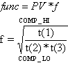

Arithmetic function block advanced topics
The ARITH_TYPE parameter determines how PV and the compensation terms (t) are combined. The user can select from nine commonly used math functions, which are depicted below. COMP_HI and COMP_LO are compensation limits.
Flow compensation square root

If there is a divide by zero and the numerator is positive, f is set to COMP_HI; if the numerator is negative, then f is set to COMP_LO. The square root of a negative value will equal the negative of the square root of the absolute value. Imaginary roots are not supported.